Descomprima Coppermine (llame a la carpeta /coppermine).
Entre en phpMyAdmin como usuario root y cree un usuario de MySQL con nombre iaw_coppermine_1, contraseña iaw_coppermine_1 y base de datos iaw_coppermine_1.
Abra en el navegador /coppermine e inicie la instalación. Haga una captura de toda la pantalla:
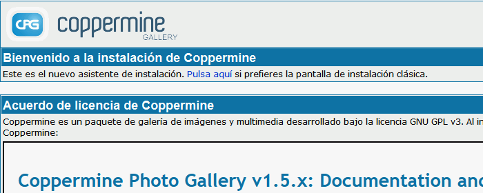
Instale Coppermine creando el usuario administrador admin y contraseña admin. Haga una captura de toda la pantalla una vez instalado:
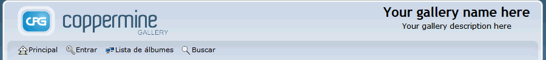
2. Nombre y logo del sitio: WebApps Gallery
Cambie el nombre del sitio (WebApps Gallery) y el logotipo . Haga una captura de toda la pantalla:
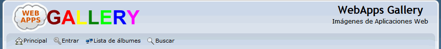
3. Crear dos usuarios más
Configure Coppermine para que los usuarios se puedan registrar por su cuenta y cree dos usuarios:
usuario WordPress con contraseña wordpress
usuario Drupal con contraseña drupal.
Haga una captura de toda la pantalla de registro de cada usuario:
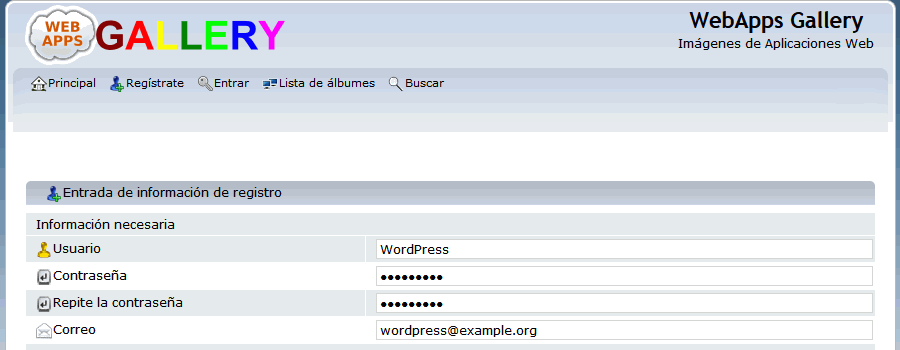
4. Subir imágenes en álbumes
Como usuario WordpPress cree el album Tema 2014 y suba las imágenes siguientes con los siguientes títulos:
Aspecto inicial
Contenido destacado - Rejilla
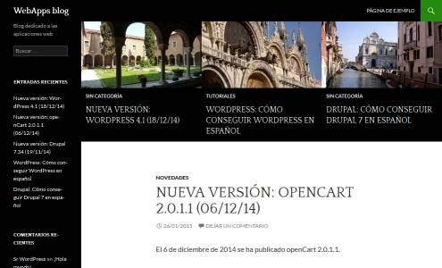
Contenido destacado - Carrusel
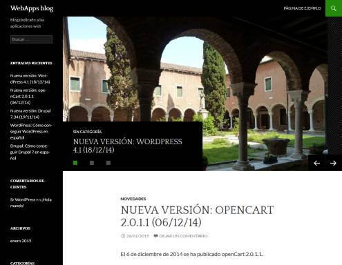
Como usuario WordpPress cree el album Tema 2015 y suba las imágenes siguientes con los siguientes títulos:
Aspecto inicial
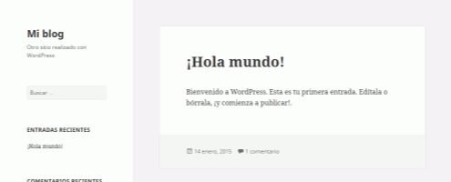
Imagen destacada
Haga una captura de toda la pantalla mostrando las galerías y las imágenes:
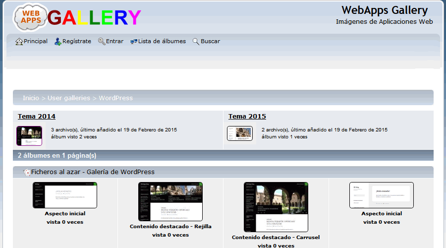
5. Completar la traducción al español
Traduzca el nombre y descripción de la categoría "User gallery" al español (no hay que modificar ningún archivo, se hace en el panel de control de la aplicación). Haga una captura de toda la pantalla:
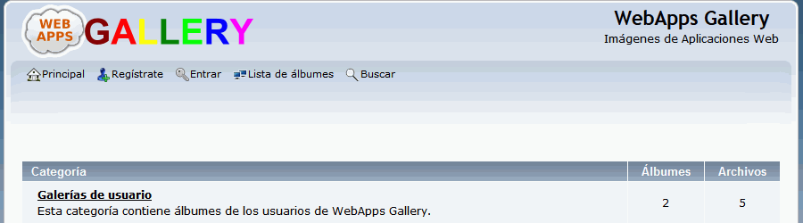
6. Pie de página personalizado
Añada un pie de página personalizado (el archivo se puede llamar pie.php y debe entregarse al entregar el examen). Haga una captura de toda la pantalla en la que se vea el pie de página personalizado y la dirección enlazada:
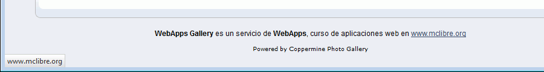
7. Filtrar palabras
Active el filtrado de palabras e incluya algún insulto en el listado de palabras malsonantes (en inglés, bad words). Haga una captura de toda la pantalla en la que se vea cómo se activa el filtrado de palabras.
Como usuario Drupal añada un comentario ofensivo en alguna imagen del usuario WordPress y compruebe que se filtra. Haga una captura de toda la pantalla:
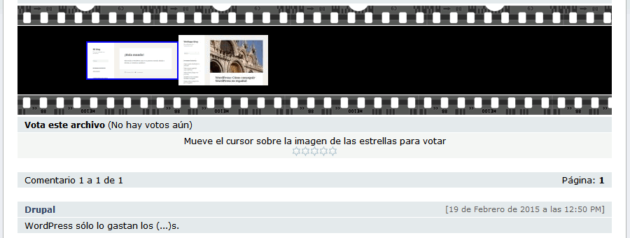
8. Banear al usuario que insulta
Impida la entrada al usuario Drupal, por insultar. Haga una captura de toda la pantalla de configuración y otra en el intento de entrada del usuario Drupal:
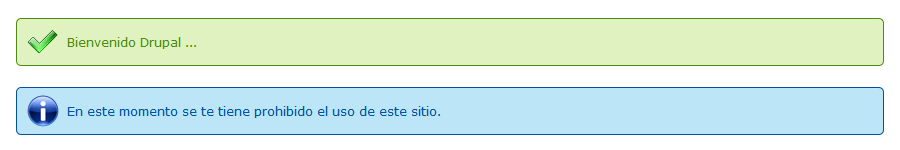
9. Crear un tema
Cree un nuevo tema que se llame WebApps (copiado del tema curve) y elíjalo como tema predeterminado. Haga una captura de toda la pantalla.
Nota: Para que se aplique el nuevo tema hay que modificar el nombre del tema en uno de los archivos del tema.
Convierta en azul en el tema WebApps el color de únicamente los dos elementos siguientes. Haga una captura de toda la pantalla):
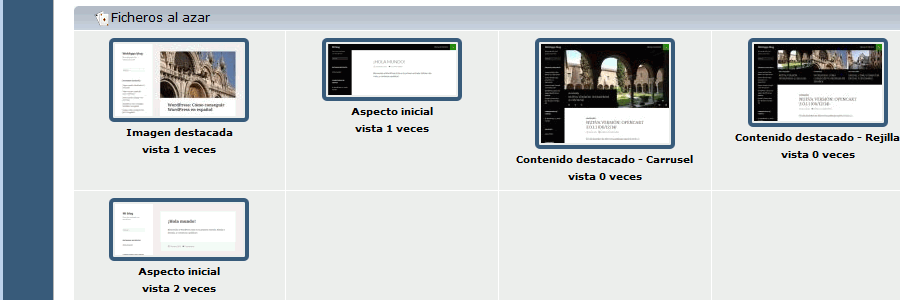
10. Alias
Cree un alias para poder acceder a Coppermine mediante la dirección http://localhost/coppermine.
Escriba un fichero alias.txt con el alias que ha creado.
11. Copia de seguridad
Entre en phpMyAdmin como usuario iaw_coppermine_1, elija la base de datos iaw_coppermine_1 y exporte las tablas con el método rápido al fichero iaw_coppermine_1.sql.